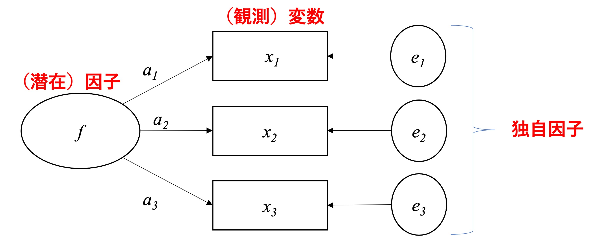

9.2 因子分析とは
心理尺度を扱う際には、採用している尺度の各項目が概念をきちんと捉えているか検討することが重要だと述べた。尺度の構成においては概念的な検討に加え統計的な分析の両面から確認することが求められる。本章では、尺度の全体的な構造を統計的に検討するための手法として探索的因子分析を紹介する。因子分析は、項目間の相関関係に基づき、項目同士に共通している成分（因子）を見つけるための手法である（南風原, 2002）。心理尺度との関連で言えば、この因子は?? で説明した構成概念に該当する。探索的因子分析は、観測された項目の相関関係に基づき、何個のどのような因子を用いることでデータを説明できるか推測する方法である（南風原, 2002）。より具体的には、探索的因子分析においては主に（1） 因子数と（2）各因子に含まれる項目、という二側面から尺度の構成を検討する（小塩, 2024）。
因子分析は、観測された変数の背後に潜在的な共通因子（common factor）が存在することを仮定する。そして、「潜在因子から観測変数の影響」を捉えた構造のモデルを定式化することで、観測された変数同士のまとまり（相関）を説明する方法である。因子分析は心理学分野で発展した手法であり、人々の心理的特徴（例えば、価格志向やコスモポリタニズム）を多面的に捉えることや、情報の複雑さを削減することができる。
因子分析には大きく分けて1つのアプローチが存在する。第1に、探索的因子分析である。これは、複数の観測変数間の相関関係から、その背後にいくつ潜在的な因子を導入すれば観測変数間の関係をうまく説明できるのかを探索的に調査・分析する方法である。第2に、確認的因子分析である。これは、先行研究などに基づき、因子の数と因子負荷量について仮説的な構造を想定し、その構造をデータに基づき検証する方法である。この手法は、共分散構造分析と呼ばれる分析手法を応用したものである。これら2つのうち本書では、探索的因子分析に焦点を合わせる。
因子分析では、観測変数の値を規定するような、共通する潜在因子が存在すると考える。図9.1 は、3つの観測変数と1つの潜在因子との関係を表す因子モデルを図示したものである。因子分析では観測変数間の相関を捉えており、観測変数間に高い相関があるということは、その背後に共通する因子があると考える。図9.1 における \(f\) は潜在因子、 \(x_j~(j=1,2,3)\) は観測変数を表している。また、因子と変数の関連性は \(a_j\) という因子負荷量で表現され、 \(e_j\) は因子では説明できない変数のばらつきを表す独自因子と呼ばれる。図示化においては、一般的に観測変数は四角形、潜在因子と独自因子は円や楕円で表現される事が多い。

Figure 9.1: 因子分析モデル
因子モデルにおいて \(a_1\), \(a_2\), \(a_3\) として示された因子負荷量は、因子がそれぞれの観測変数にどの程度影響を与えているかを表しており、因子負荷量が高い程、因子と観測変数の関連が強いことを示す。また、因子分析を実行すると、因子寄与率（分散比率）が算出される。これは、観測項目全体の分散を因子によってどの程度説明しているかを示している。